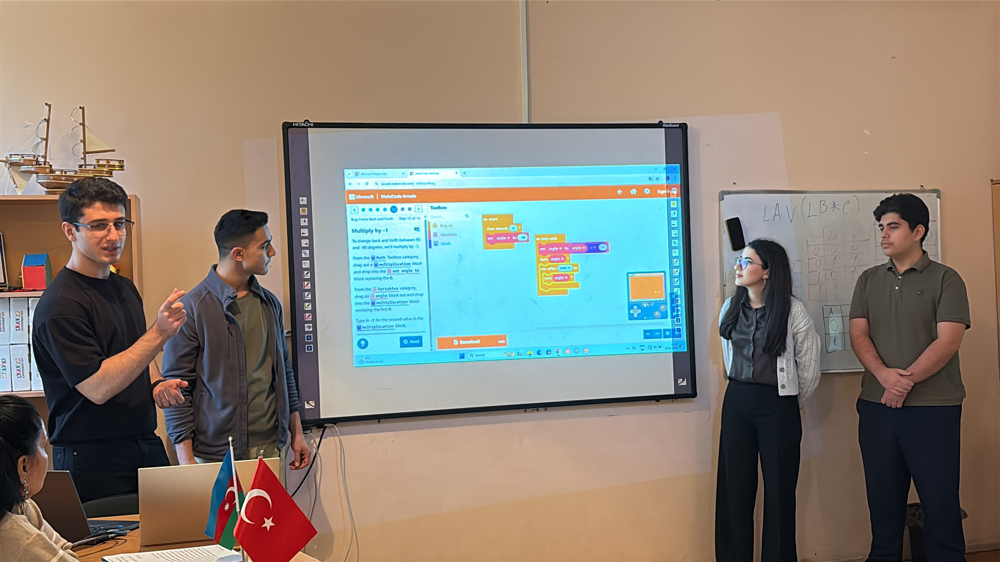
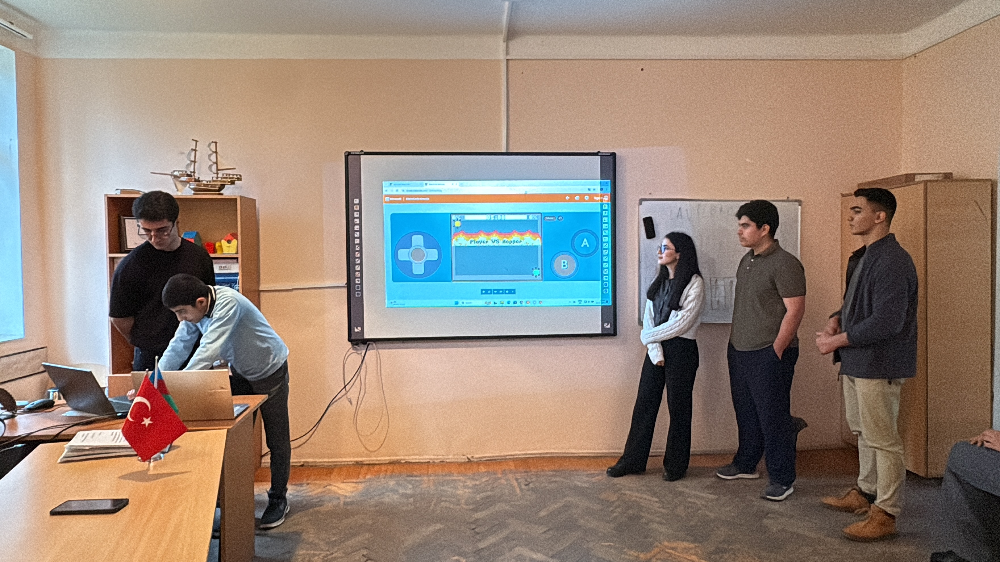
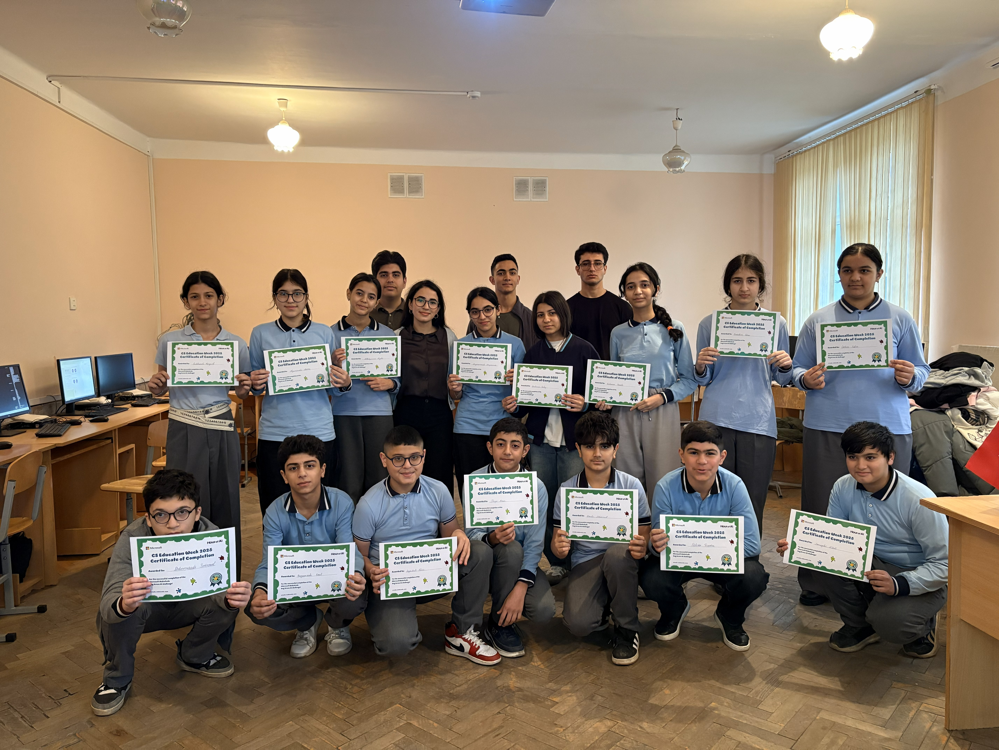
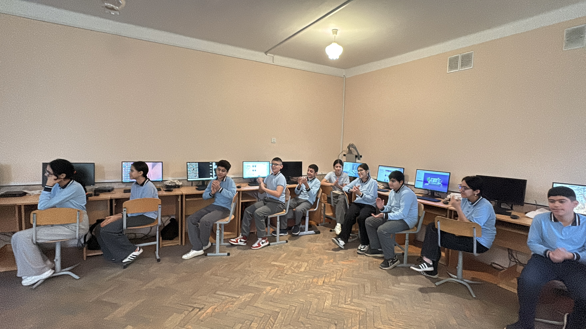

Projects
Here are some of the projects I've been working on. Each project represents my learning journey and growing skills in web development and programming.

Project 2
For Hour of Code, we selected 8th grade of Secondary School No. 52. A total of 19 students participated in the class.




View Project
Interactive Project
A dynamic project that demonstrates various programming concepts and web technologies. Focuses on user experience and clean code.
HTML
CSS
JavaScript
View Project